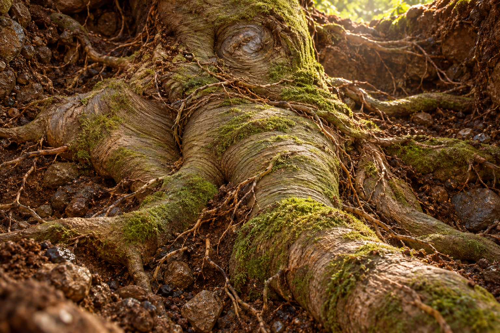

The Earth Spirit
Before it emerged.
The Living World begins to give itself a form.
The Earth Spirit Begins to Take Form

A Living World Beneath the Surface
In Utah, a grove of quaking aspens called Pando offers a remarkable image of connection. Thousands of trunks grow from a shared root system, forming a single organism across about 106 acres. What appears above ground as many trees belongs to a greater living whole beneath the soil.
In Oregon’s Malheur National Forest, an underground fungal network known as the Humongous Fungus extends across an estimated 2,385 acres. Its root-like strands belong to one organism. Together, these natural examples offer an image of living unity beneath what appears to be many separate things.
A network of roots is only one of many examples of the organisms and complex connections that fill the Living World before it becomes cognizant of its own existence. Life already grows, adapts, and interacts in countless ways. These hidden connections offer a beginning for imagining the Earth Spirit’s growing awareness of the living whole to which it belongs.
The Living World Gives Itself a Form
In the mythology of Earth Wakens, a vast root mass becomes a united living organism, spreading across thousands of acres. As the story unfolds, it is no longer recognizable as separate roots. It becomes a living substance capable of shaping itself into a body, limbs, and reaching hands. Through this substance, the Living World yields a physical form through which the Earth Spirit’s growing awareness can find expression.
The natural shape of the stump suggests a face, giving the imagination a beginning for this transformation. Moss suggests living tissue, while the finest rootlets recall vessels and the branching of nerve cells. The Earth Spirit has no gender. Its spirit was present through Earth’s existence long before this form emerged; now it is becoming cognizant of that existence.
The Colony and the Earth Spirit
The queen ant and its colony offer an analogy for this connection. The queen belongs to the colony and depends on its shared life. Within the story, the Earth Spirit belongs to the Living World in a similar way: part of its vast activity, sustained by its creatures and connections, and unable to control every outcome.
The colony’s many interactions offer an image of awareness arising through countless connections. The root mass gives that idea a body: the Living World shaping a form through which its awareness can reach, touch, and move.
Emerging to Walk the Earth
Across the long evolution imagined in the story, that awareness seeks a form that can emerge from the ground, stand, and walk. The Earth Spirit wants to reach beyond the place where it is rooted, to touch and shape the world through which it lives.
Its physical living form remains part of the earth that yielded it. As it begins to walk the earth as the Earth Spirit, it carries the Living World with it: its growth, its beauty, its changing forms, and its inevitable decay.
Natural-world references: NASA Earth Observatory — Pando, Utah’s shared-root aspen grove; National Park Service — fungal networks and Oregon’s Humongous Fungus. The transformation into a body belongs to the mythology of Earth Wakens.